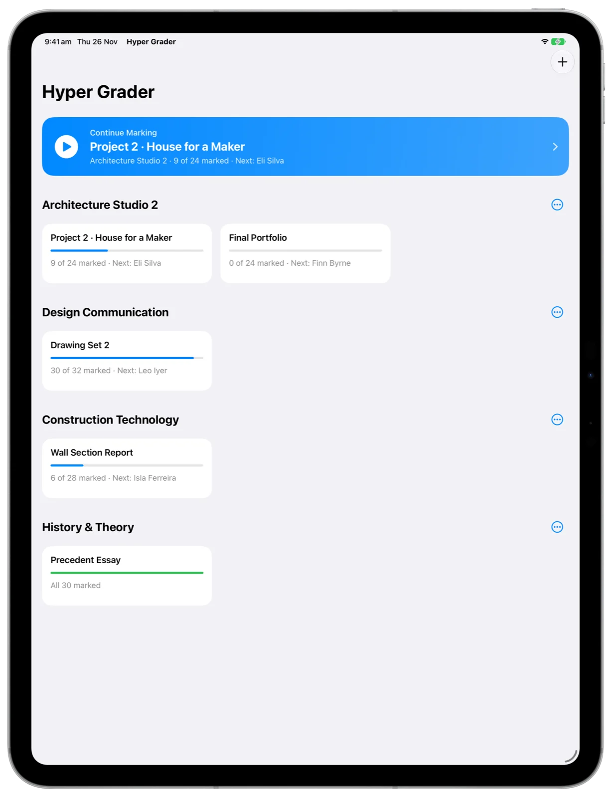

a marking app for mac and ipad
say it, mark it, move on.
Rate each criterion, talk through what you see, and Hyper Grader writes the feedback in your words. When the class is done, marks and comments go straight back to Canvas.
join the beta see how it works
your words, ums and all
you ramble, they read feedback
what you said
Okay, Hana. Um, so the concept's really strong, like, the house as a, uh, a workshop that opens up to the street, that's… yeah, that's great. And the long section is honestly the best drawing in the set. Um. Development kind of stalls after, what, week six? The plan barely changes from the crit. Representation's clean, but the, ah, the model photos are really dark, you can't see the timber at all. Presentation's fine. So, yeah, um, push the material story and show the plan evolving.
what Hana reads
Hana, your concept is the strongest part of this project: a house that works as a workshop and opens itself to the street is a generous, clear idea, and your long section shows it beautifully.
The design development doesn't keep pace with that idea. From week six the plan barely changes, so the iterations we discussed in the crit don't show up in the final drawings. Representation is clean, but the model photographs are too dark to show the timber you describe.
For the portfolio, show how the plan evolved and re-shoot the model in daylight. Those two changes would lift this into Distinction territory.
Same points, same judgement, same voice. Hyper Grader keeps what you meant, drops the ums, and turns "push the material story" into something a student can act on. You can edit every word before it goes anywhere.
today
a plan for the pile
Add the date students submit and Hyper Grader does the rest. Marks are due fourteen days later (you can change that), and each class is spread over the working days left.
The start screen tells you how many to mark today, most urgent first, and how long that should take at your usual pace. The ring fills as you go. Switch to the board to see everything at once.
Running behind? Take something off today's plan, or push its deadline when you've given an extension.

marking
talk, don't type
Pick a grade band for each criterion, then High, Mid or Low within it. The arrow keys jump between bands. Your total and grade update as you go.
Hit Record and say what you think while you look at the work. Dictation runs on your Mac.
If a total sits just under the next grade, Hyper Grader points it out so you can decide whether it should go up.

canvas
canvas in, canvas out
Drop in your Canvas gradebook export, rubric and class list together. Hyper Grader works out which file is which, sets up each assignment with its class, and tells you when you've picked the wrong file.
When you're finished, Send to Canvas writes two files: one for the gradebook and one for the rubric, with your comment on every criterion. Upload them in Canvas. No integration, no API token, nothing to install at your university.

ipad
on the couch, too
The iPad version marks with a finger, a keyboard or your voice, and picks up where you left off. It's in testing now.

privacy
private by default
Student work stays on your Mac or iPad. Feedback is written by Apple's on-device model and dictation never leaves the device. There are no accounts, servers or analytics.
If you'd rather use Claude for feedback, Hyper Grader asks first, swaps student names for placeholders before anything is sent, and lets you stop sharing at any time.

and the rest
- rubric editor Build or edit rubrics beside your marking, or import them from Canvas.
- consistency check Read across a whole cohort's feedback for mismatched scores and tone.
- student profiles See each student's marks and feedback across assessments.
- your grade scale Standard Adelaide bands, or import your own marking scheme.
- keyboard first Next student with ⇧⌘↩, generate with ⌘↩, record with ⌘R.
- dark mode For marking after hours.
join the beta
Hyper Grader is in TestFlight for macOS 26 and later. If you mark rubric-based work and want to try it, send me a note.